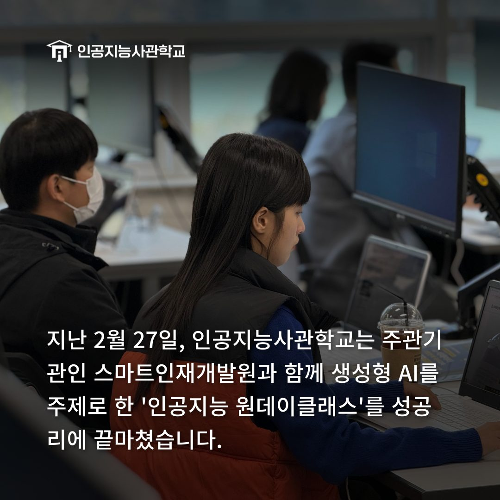
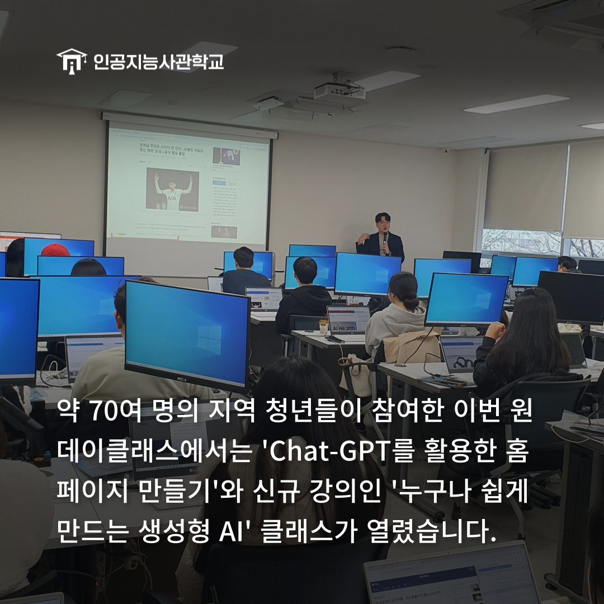
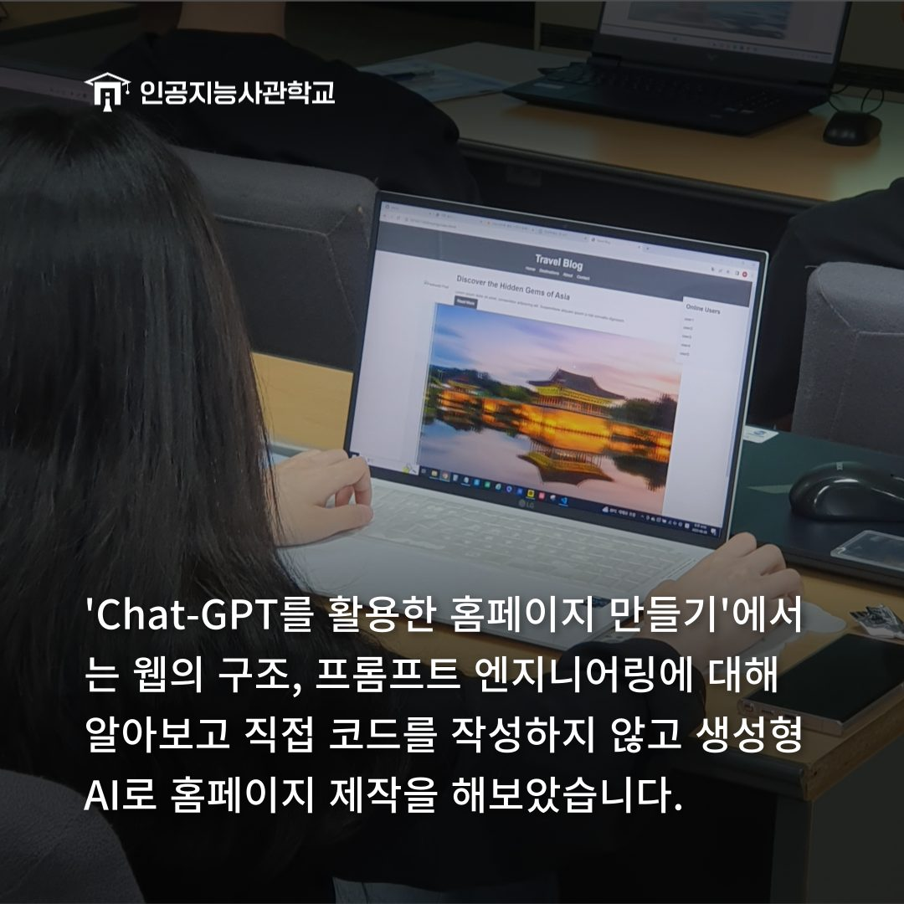
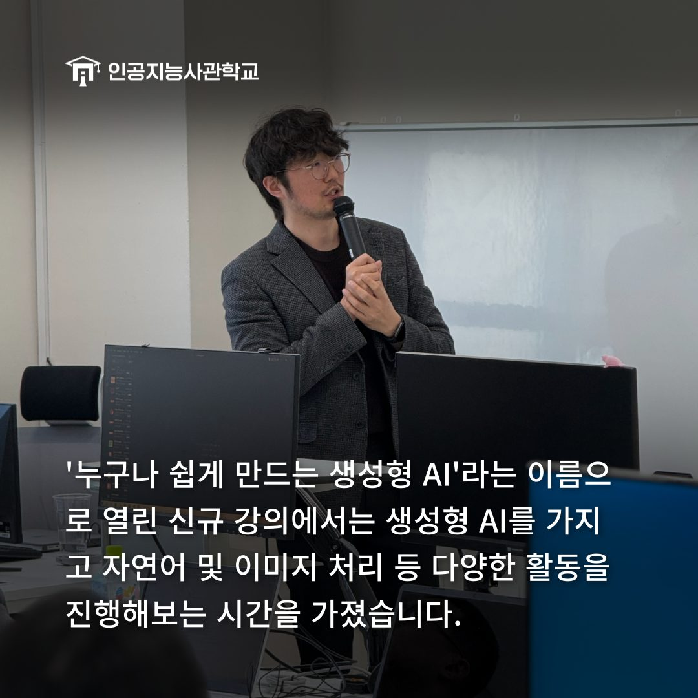
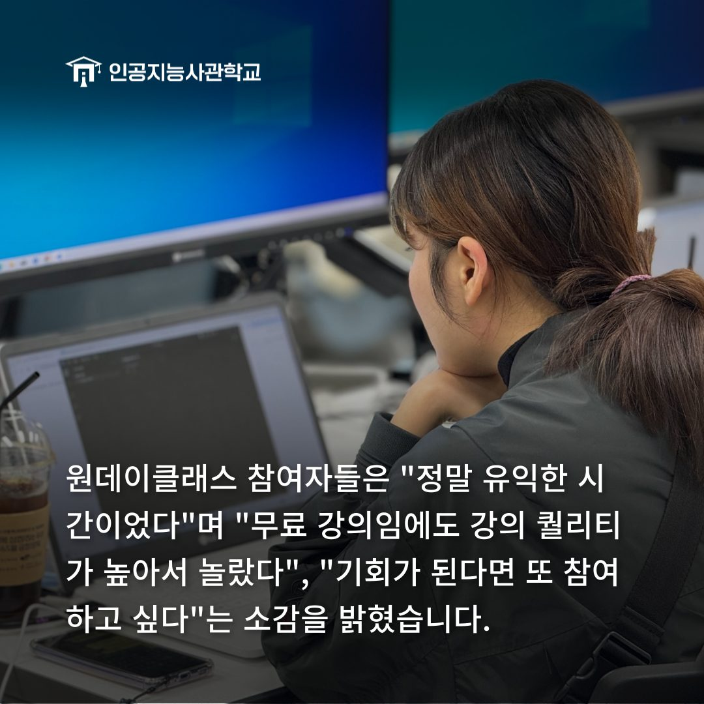

안녕하세요! 인공지능사관학교입니다. 😆
지난 2월 27일, 인공지능사관학교에서
인공지능 원데이클래스가 열렸습니다!

인공지능 원데이클래스는 Chat-GPT, 머신러닝, 프롬프트 엔지니어링 등
생성형 AI를 주제로 진행됐습니다.😊

약 70여 명의 지역 청년들이
원데이클래스에 참여해 주셨는데요!
이번에 열린 클래스는 아래와 같습니다.
💻Class A. <Chat-GPT를 활용한 나만의 홈페이지 만들기>
🎨Class C. <누구나 쉽게 만드는 생성형 AI>

💻Class A. <Chat-GPT를 활용한 나만의 홈페이지 만들기>에서는
웹의 구조 및 웹 개발의 기초에 대해 알아보고
효과적으로 프롬프트를 작성하는 방법에 대해 알아봤습니다.
그리고 Chat-GPT로 코드를 작성하여 나만의 홈페이지를 만들어 보았습니다.

🎨Class C. <누구나 쉽게 만드는 생성형 AI>에서는
생성형 AI가 무엇인지에 대해 배워보고
오픈소스를 가져와 생성형 AI로 자연어 및 이미지 처리를
직접 해볼 수 있는 시간을 가졌습니다.

원데이클래스 참여자들은 "정말 유익한 시간이었다.
기회가 있다면 또 참여하고 싶다."라고 소감을 밝혔습니다.